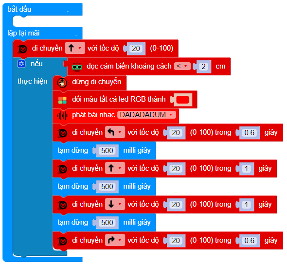

6. Bài 4: Đèn LED nhiều màu RGB
Giới thiệu
Đèn LED RGB, có thể hiện ra nhiều màu từ 3 LED bên trong với 3 màu cơ bản là đỏ (Red), lục (Green) và lam (Blue). RGB là viết tắt của 3 màu cơ bản đó.
Đèn LED RGB có 4 chân, 3 chân nối với 3 đèn LED bên trong và 1 chân chung cho cả 3 LED này. Có 2 loại đèn LED RGB: loại chân chung nối với nguồn âm (GND) và chân chung nối với nguồn dương (VCC).
LED RGB có trên bộ kit Phys:Bit là loại chân nối với GND.
{kind=link}
Xây dụng mạch điện
Thành phần:
Đèn LED RGB.
3 Điện trở 100 Ω.
Sơ đồ mạch điện
Nguyên lý hoạt động:
Theo sơ đồ trên, chân chung của đèn LED RGB sẽ được nối vào GND và 3 chân còn lại của 3 LED sẽ được điều khiển bật tắt bằng 3 chân cắm mở rộng của Yolo:Bit là P0, P1 và P2.
{kind=link}
Kết nối mạch điện
Hãy kết nối mạch điện như hình minh họa:
{kind=link}
Chương trình
Ta sẽ lập trình cho Yolo:Bit hoạt động như sau:

Nếu nút A được nhấn, ta cho đèn LED RGB hiện màu đỏ bằng cách bật chân P0 (nối với LED đỏ bên trong đèn LED RGB) và tắt 2 chân còn lại.
Nếu nút B được nhấn, ta cho hiện màu xanh lá bằng cách bật chân P1 (nối với LED xanh lá bên trong đèn LED RGB) và tắt 2 chân còn lại.
Nếu cả 2 nút A và B được nhấn, ta cho đèn LED RGB hiện màu xanh dương bằng cách bật chân P2 (nối với LED xanh dương bên trong đèn LED RGB) và tắt 2 chân còn lại.
{kind=link}
Kết quả
Kết quả của chương trình như sau:
{kind=link}
Bài tập mở rộng
Hãy thử làm
{kind=link}
Cho đèn LED đỏ và đèn LED lục cùng sáng
Cho đèn LED lam và đèn LED đỏ cùng sáng
Cho đèn LED lục và đèn LED lam cùng sáng
Để 3 đèn LED cùng sáng
Chương trình mẫu
Đèn LED nhiều màu RGB: Tại đây
{kind=link}